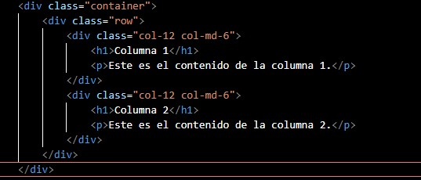

div class="container": La clase "container" de Bootstrap es un contenedor general para el contenido de tu página. Por lo general, proporciona un margen automático en ambos lados y escala el ancho del contenido en diferentes tamaños de pantalla. Hay dos versiones de contenedores en Bootstrap: ".container", que proporciona un ancho de contenedor responsive, y ".container-fluid", que siempre toma todo el ancho de la pantalla. div class="row": La clase "row" de Bootstrap se utiliza para contener columnas. Funciona en conjunto con las clases de columnas para crear un sistema de cuadrícula que se puede usar para diseñar el contenido de la página. Cada "row" puede contener hasta 12 columnas en total (según la documentación oficial de Bootstrap a septiembre de 2021). div class="col-12 col-md-6": Esta es una clase de columna de Bootstrap. "col-12" significa que esta columna tomará todo el ancho (12 de 12 unidades) de la cuadrícula en pantallas pequeñas (menos de 576px por defecto). "col-md-6" significa que esta columna tomará la mitad del ancho (6 de 12 unidades) de la cuadrícula en pantallas medianas (más de 768px por defecto) y superiores.
h1>Columna 1 /h1 y p Este es el contenido de la columna 1./p: Estos son solo contenido dentro de las columnas. En este caso, un título y un párrafo para cada columna. Finalmente, cerramos todas las divisiones con /div al final de cada elemento de bloque. En resumen, Bootstrap utiliza un sistema de cuadrícula basado en 12 columnas que se escalan dependiendo del tamaño de la pantalla.
